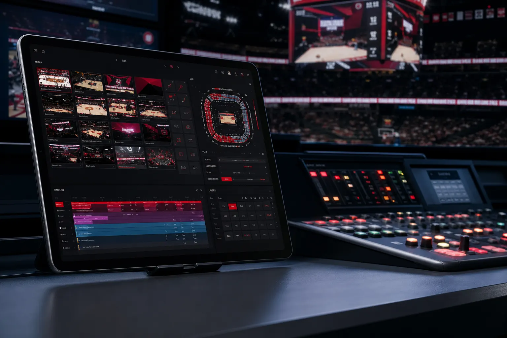
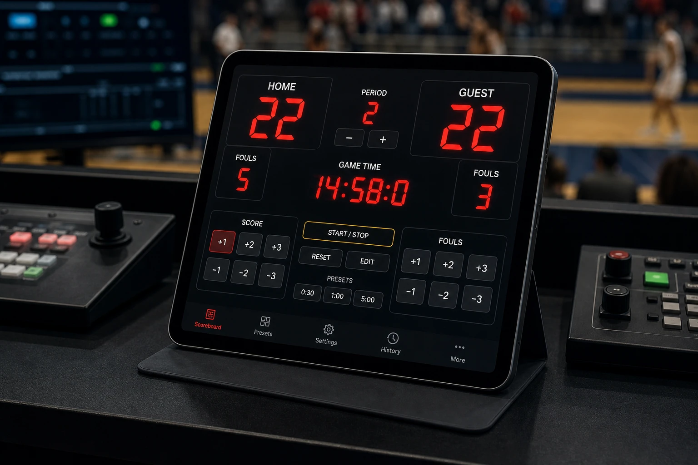
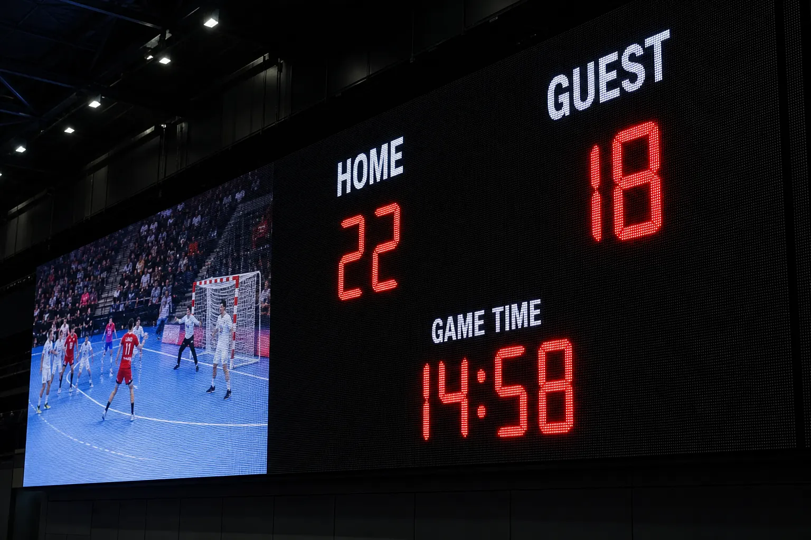
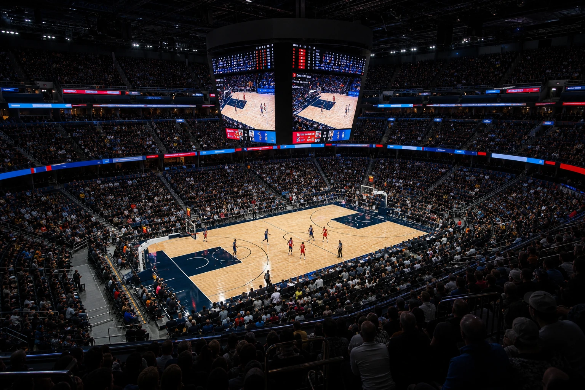
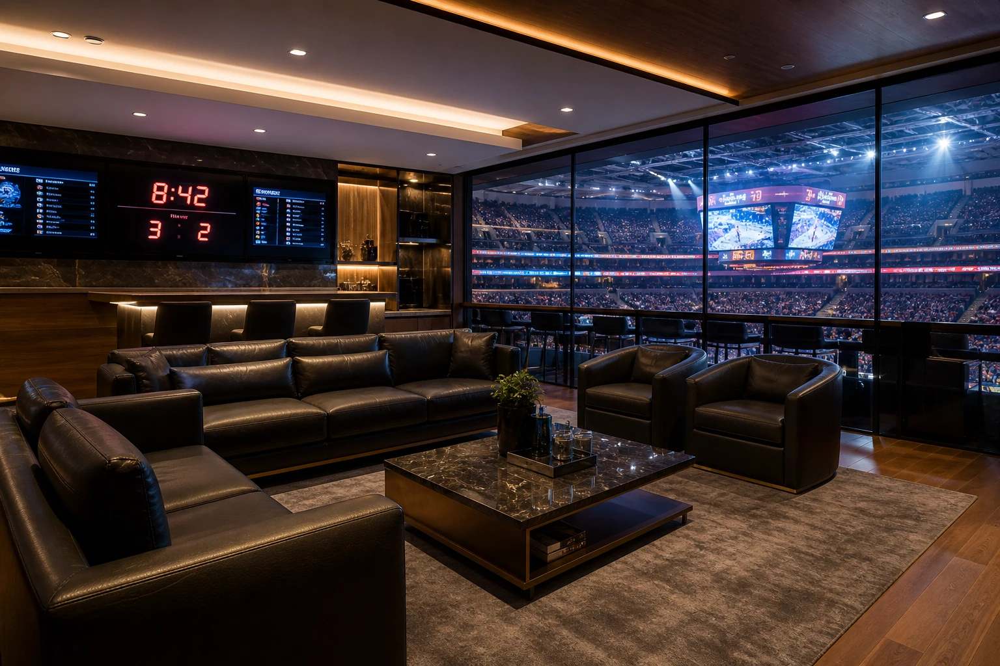

FrontendSLAM DECKCOR
The Intelligent Control Deck for Professional Sports Communication
SLAM DECKCOR ist die zentrale Bedien- und Steuerumgebung innerhalb der SLAM.SYSTEMS COR FAMILY. Als Verbindung zwischen Operator und System schafft SLAM DECKCOR eine intuitive Schnittstelle für die Steuerung moderner Sport- und Eventumgebungen. Von hier aus werden Medieninhalte, LED-Systeme und Live-Prozesse einfach und zuverlässig kontrolliert.
Entwickelt für professionelle Sportumgebungen verbindet SLAM DECKCOR maximale Übersicht mit einfacher Bedienung. Die grafische Oberfläche auf iPad Pro ermöglicht einen intuitiven Workflow und erlaubt die zentrale Steuerung einzelner LED-Systeme bis hin zu komplexen, vernetzten Display-Umgebungen. Auch bei anspruchsvollen Live-Szenarien bleibt die Bedienung klar und übersichtlich, sodass eine einzelne Person den gesamten Ablauf sicher überwachen und steuern kann.
Die Systemarchitektur basiert auf Stabilität, Flexibilität und Erweiterbarkeit. Durch den modularen Aufbau kann SLAM DECKCOR individuell an unterschiedliche Anforderungen angepasst und jederzeit erweitert werden.
Keyfigures & Modules
Keyfigures
- Intuitive grafische Bedienung über iPad Pro
- Zuverlässiger Systembetrieb auf Basis professioneller Redundanzkonzepte
- Modulare Systemarchitektur mit flexiblen Erweiterungsmöglichkeiten
- Synchronisierter Multi-System-Betrieb mit einer Latenz von unter 18 ms
- Integration von LED-Systemen und externen LED-Controllern
- Digital Signage Lösungen für VIP-Bereiche, Hospitality und Informationsumgebungen
- Anbindung von InhouseTV- und Information Displays
- Geringe Betriebs- und Wartungskosten
- System-Hardware basierend auf standardisierten, weltweit verfügbaren Produkten
- Einheitlicher SLAM.SYSTEMS Family Look und konsistente Systemstruktur
- Professionelle Installationsunterstützung, Projektbegleitung und Schulung
- Online-Statusüberwachung der angeschlossenen SLAM PLAYCOR Systeme
Extensions
- Helligkeitsnachführung bei Sonneneinstrahlung für Outdoor LED-Systeme
- Remote Control und Remote Service für lokale und externe Systemzugriffe
- Individuelle Kundenbetreuung und technischer Support
- Steuerung von ArtNet / DMX-Protokollen
- Datenbankintegration für Clubs und Ligen
- RSS Feed Integration und Live-Texteingaben
- Fan Engagement Lösungen (Custom Made)
- Individuelle Programmierung für kundenspezifische Anforderungen (Custom Made)

FrontendSLAM SCORECOR
Connecting sport data. Connecting visual communication.
Als spezialisiertes Frontend innerhalb der SLAM COR FAMILY wurde SLAM SCORECOR entwickelt, um professionelle Scoreboard- und Live-Informationssysteme einfach, flexibel und zuverlässig zu steuern. Über die klar strukturierte Bedienoberfläche auf dem iPad Pro können Schiedsrichter oder Operatoren alle relevanten Inhalte sicher und effizient im Live-Betrieb steuern.
SLAM SCORECOR wird individuell für Sportarten, Ligen und Wettbewerbe konfiguriert und passt sich den jeweiligen Anforderungen an – von Spielregeln und Datenstrukturen bis hin zu individuellen Layouts und visuellen Darstellungen. Zusammen mit SLAM PLAYCOR entsteht eine leistungsfähige „stand-alone“ Lösung, die für unterschiedliche LED-Scoreboard-Formate und kundenspezifische Darstellungsanforderungen ausgelegt ist.
Bei wachsenden Anforderungen lässt sich das System durch weitere SLAM COR Komponenten gezielt erweitern. Mit SLAM DECKCOR und SLAM DIRECTORCOR entsteht eine zentrale Umgebung für die Steuerung von Spielinformationen, Sponsoren- und Werbekommunikation, Medieninhalten, LiveTV-Darstellungen auf dem Scoreboard sowie weiteren visuellen Elementen.
Durch integrierte Broadcast-Schnittstellen können offizielle Spielzeiten und Resultate mit externen Produktionssystemen synchronisiert werden. SLAM SCORECOR unterstützt zudem weitere Datenquellen wie beispielsweise Kinexon Echtzeit-Ortung (RTLS), wodurch Standort- und Bewegungsdaten erfasst und als visuelle Informationen auf dem LED-Scoreboard dargestellt werden können.
Mit SLAM DIRECTORCOR können Multimedia-Shows vorprogrammiert und im Live-Betrieb automatisiert ausgeführt werden. Mediensequenzen, visuelle Effekte sowie externe Systeme wie Licht- und Tontechnik lassen sich zeitlich abgestimmt integrieren und als Bestandteil des gesamten Live-Erlebnisses steuern.
SLAM SCORECOR verbindet damit Sportlogik, Live-Daten, Medieninhalte und visuelle Kommunikation zu einem intelligenten Frontend für moderne Sportpräsentationen.
Keyfigures & Modules
Keyfigures – Stand-alone
- Individuelle Konfiguration für Sportarten, Ligen und Wettbewerbe
- Scoreboard- und Live-Informationsmanagement
- Spielstände, Spielerinformationen und Teamdaten
- Integration von Logos und Medieninhalten
Mit DECKCOR und DIRECTORCOR
- Sponsoren- und Werbekommunikation
- LiveTV-Darstellung
- Layer-basierte Content-Darstellung
- Flexible Display-Zuweisung
- Preset-basierte Workflows
- Broadcast-Schnittstellen
- Synchronisation von Match-Uhr und Resultaten
- Integration externer Datenquellen
Extensions
- Erweiterte Statistikmodule
- Zusätzliche Datenquellen
- RTLS-Datenintegration wie Kinexon
- Individuelle Sportlayouts
- Zusätzliche Display-Zonen
- Erweiterte Broadcast-Schnittstellen
- Kundenspezifische Kommunikationsmodule

ControlSLAM DIRECTORCOR
The intelligent orchestration layer behind every live experience
SLAM DIRECTORCOR ist die zentrale Umgebung zum Erstellen, Verwalten und Ausführen professioneller Medienlayouts und Live-Szenarien. Durch die Layer-basierte Komposition von Mediensequenzen, visuellen Effekten und externen Systemen ermöglicht SLAM DIRECTORCOR die präzise Gestaltung skalierbarer Live-Erlebnisse – von einzelnen Display-Anwendungen bis hin zu vollständig integrierten Multimedia-Shows in Stadien, Eventhallen und weiteren Live-Umgebungen.
Innerhalb der COR FAMILY übernimmt SLAM DIRECTORCOR dabei die zentrale Verwaltung von Inhalten sowie deren Skalierung, Positionierung und zeitliche Steuerung für die definierten Ausgabesysteme. Inhalte können automatisch zur gewünschten Zeit, in der gewünschten Größe und an der definierten Position auf LED-Systemen oder weiteren Displays dargestellt werden.
Dabei verbindet das System kreative Gestaltungsmöglichkeiten mit intelligenter Steuerung. Medieninhalte, LiveTV-Stationen, Digital Signage Anwendungen sowie externe Systeme wie Licht, Ton sowie Peripheriegeräte von Drittanbietern werden über definierte Schnittstellen integriert und zentral orchestriert. So entsteht eine leistungsfähige Umgebung, in der Inhalte, Technologien und Abläufe präzise aufeinander abgestimmt werden können – für professionelle Live-Kommunikation mit maximaler Kontrolle und einer klaren, sicheren Bedienung.
Bei der Entwicklung der gesamten SLAM.SYSTEMS Familie wurde besonderer Wert auf eine klare Systemarchitektur, intelligente Integration und eine einfache Bedienphilosophie gelegt. Der Operator arbeitet dabei immer mit der vertrauten SLAM.SYSTEMS Benutzeroberfläche und Systemlogik – auch bei Erweiterungen und zukünftigen Systemgenerationen. Die Verbindung einzelner Komponenten ermöglicht leistungsfähige Live-Umgebungen mit einer einheitlichen Systemerfahrung für den Anwender.
Keyfigures & Modules
Keyfigures
- Erstellung und Verwaltung von Medienlayouts und Live-Szenarien
- Layer-basierte Komposition von Medieninhalten und visuellen Elementen
- Steuerung von Mediensequenzen und automatisierten Abläufen
- Verwaltung von Display-Layouts und Darstellungspositionen
- Skalierung und Zuweisung von Inhalten auf LED-Systeme und Displays
- Steuerung mehrerer Medienausgabesysteme
- Unterstützung von 8K/UHD-Mediaplayern
- Integration von Digital Signage Anwendungen
- Synchronisierte Steuerung externer Systeme
- Integration von Licht-, Ton- und Kinetik-Systemen über Schnittstellen
- Einheitliche SLAM.SYSTEMS Bedienoberfläche
Extensions
- Erweiterte Showsteuerung und Automatisierung
- Integration zusätzlicher Datenquellen
- Broadcast-Workflows (TV-Studio, Encoder for Streaming)
- Audio Systeme (Dante Network Systeme)
- Steuerung zusätzlicher Peripheriesysteme
- Lichtsteuerung über DMX / ArtNet
- Custom Made Programmierungen

RuntimeSLAM PLAYCOR
The intelligent runtime engine for reliable content execution
Mit SLAM PLAYCOR setzt sich die skalierbare Software-Architektur von SLAM.SYSTEMS bis zur zuverlässigen Medienausgabe fort. Dabei spielt es keine Rolle, ob ein einzelner SLAM PLAYCOR für eine definierte Anwendung eingesetzt wird oder ganze Stadion- und Live-Umgebungen synchron und zeitgenau mit Inhalten versorgt werden. Mit einer Latenz von unter 18 ms ermöglicht SLAM PLAYCOR eine präzise und zuverlässige Wiedergabe für professionelle Live-Anwendungen.
Jeder einzelne SLAM PLAYCOR kann Inhalte eigenständig und unabhängig vom Gesamtsystem verarbeiten und ausgeben. Durch die zentrale Zuweisung und zeitliche Steuerung über SLAM DIRECTORCOR werden einzelne Player zu einem intelligent koordinierten Gesamtsystem.
Für unterschiedliche Ausgabeszenarien von HD bis 8K/UHD setzt SLAM.SYSTEMS auf bewährte Hardwarekonzepte und die Erfahrung aus über 25 Jahren OOHDT. Dieses Know-how bildet die Grundlage für zuverlässige Systemlösungen, einen stabilen Betrieb und eine klare Systemarchitektur, die langfristig zu einer wirtschaftlichen Betriebsführung beiträgt.
Für Live-Events mit erhöhten Anforderungen an Verfügbarkeit und Betriebssicherheit kann SLAM PLAYCOR gemeinsam mit den SLAM.SYSTEMS LED-Displays in einer redundanten Systemarchitektur betrieben werden, wenn diese Anforderungen durch den Veranstalter oder Wettbewerb vorgegeben werden.
Keyfigures & Modules
Keyfigures
- Zuverlässige Runtime für professionelle Medienausgabe
- Eigenständige Verarbeitung und Ausgabe von Content
- Synchronisierte Wiedergabe mehrerer SLAM PLAYCOR Systeme
- Präzise zeitliche Steuerung mit Latenzen unter 18 ms
- Unterstützung von HD bis 8K/UHD Ausgabeszenarien
- Integration in die SLAM COR Systemarchitektur
- Zentrale Steuerung über SLAM DIRECTORCOR
- Unterstützung verschiedener Display- und LED-Ausgabesysteme
- Professionelle Hardwarearchitektur für stabile Live-Anwendungen
- Redundante Systemarchitekturen für erhöhte Anforderungen
- Einheitliche Integration innerhalb der SLAM.SYSTEMS Umgebung
Extensions
- Multi-Display Synchronisation
- Erweiterte Medienformate und Content-Workflows
- Integration zusätzlicher Ausgabesysteme
- Redundanter Systembetrieb
- Remote Monitoring und Systemzugriff
- Integration kundenspezifischer Schnittstellen
- Individuelle Projektanforderungen und Custom Made Erweiterungen

RuntimeSLAM TIMECOR
The intelligent runtime engine for reliable content execution
SLAM TIMECOR ist ein ergänzendes Output-Modul innerhalb der SLAM COR FAMILY zur Darstellung aktueller Match-Informationen außerhalb des Spielfelds – beispielsweise in Team- und Schiedsrichterkabinen, VIP-Bereichen oder Kontrollräumen.
Während eines Sportereignisses bleiben Spielzeit und Score auch außerhalb des Spielfelds wichtige Informationen. Besonders während Spielpausen benötigen Teams und Offizielle einen schnellen Überblick über den aktuellen Spielstand sowie verbleibende Pausenzeiten. Diese Informationen werden via SLAM PLAYCOR zuverlässig auf einem Display ausgegeben.
Besonders im Eishockey bietet SLAM TIMECOR eine wertvolle Ergänzung: Während Spielpausen erhalten Spieler und Staff jederzeit den aktuellen Spielstand sowie die verbleibende Spielzeit, ohne auf das zentrale Scoreboard angewiesen zu sein.
Keyfigures & Modules
Keyfigures
- Darstellung von Spielzeit- und Score-Informationen
- Synchronisation mit SLAM SCORECOR
- Ausgabe über SLAM PLAYCOR
- Unterstützung verschiedener Display- und Monitorformate
- Einsatz in Team- und Schiedsrichterkabinen
- Integration in VIP-, Hospitality- und Kontrollbereiche
- Aktualisierung synchron zum Live-Spielbetrieb
- Einbindung in die SLAM COR FAMILY Systemarchitektur
Extensions
- Individuelle Layout-Anpassungen
- Kundenspezifische Darstellungen für Clubs und Ligen
- Integration zusätzlicher Informationsfelder
- Erweiterte Display-Konfigurationen
- Mehrsprachige Darstellung
- Individuelle Branding- und Sponsoren-Layouts
SLAM MODULECOR
Reservierte modulare Erweiterungen innerhalb der COR FAMILY.